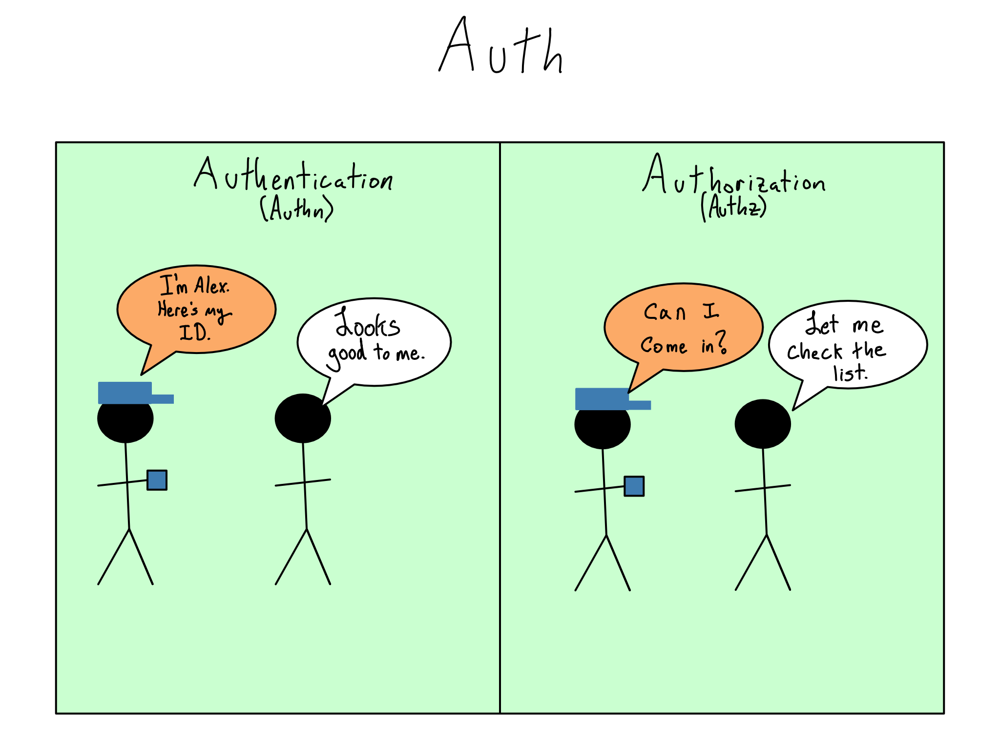
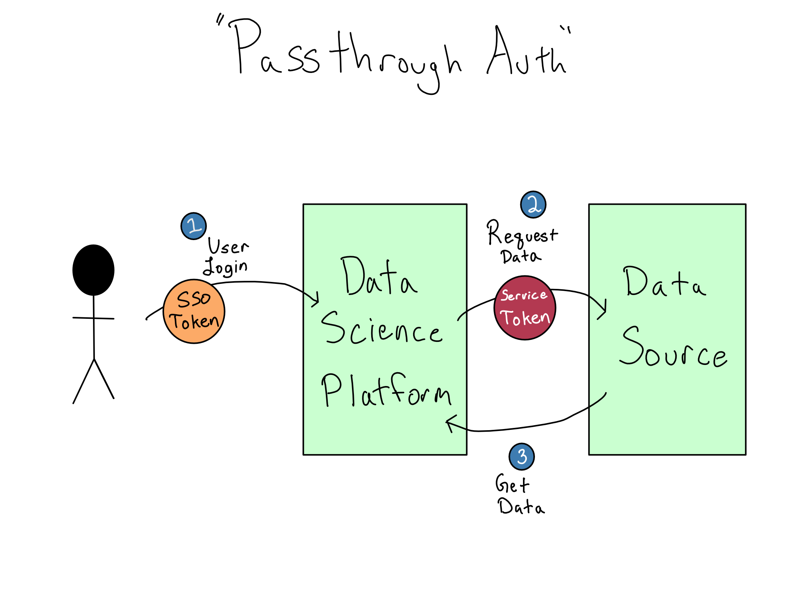

16 Auth in Enterprise
Imagine you’re suddenly responsible for managing access to the services and data in an enterprise. You’ve got dozens of people joining, leaving, or changing roles each week – and there could be dozens or hundreds of systems they might need to access. And complying with the principle of least privilege means you don’t want to give everyone access to everything. Managing who is allowed to do what could be a major headache.
One thing you almost certainly want to avoid is individual people running services and deciding how to secure standalone systems. Instead, you want to centralize the process of giving people access to the services they need, called auth, inside the IT/Admin group.
If you work in an enterprise, you’ll almost certainly have to work with the organization’s corporate auth to log in to your data science workbench and use data sources. Additionally, if you’re advocating for a data science environment at your organization, you’ll probably be given IT/Admin requirements related to auth. This chapter is designed to help you understand how IT/Admins think about auth and the technologies they have to make it work.
This chapter will help you understand a mental model for auth and the available technologies. If you’re curious about the technical operation of these technologies, there’s more detail on each in Appendix A.
16.1 A gentle introduction to auth
Consider all of the services in an enterprise that require auth: email, databases, servers, social media accounts, HR systems, and more. Let’s picture each of those services as a room in a building.
Now, imagine yourself as the person who’s in charge of auth. Your job is to give everyone access to the rooms they need and only the rooms they need.
First, you need a way to ascertain and validate the identity of anyone trying to enter a room; to do that, you’ll need to issue and verify credentials. The most common computer credentials are a username and password, but they are relatively insecure, and more secure alternatives are on the rise. These include passkeys, biometrics like fingerprints and facial identification, multi-factor codes, push notifications on your phone, and ID cards. The process of verifying credentials is called authentication (authn).
But in an enterprise context, just knowing that someone has valid credentials is insufficient. Remember, not every person gets to access every system or every feature of every system. You’ll also need a way to check their permissions, which is the binary choice of whether they can take an action like accessing a service. The permissions checking process is called authorization (authz). The combination of authn and authz comprise auth.

Many organizations start simply. They add services one at a time and allow each to use built-in functionality to issue service-specific usernames and passwords to users. This would be similar to posting a guard at each room’s door to create a unique credential for each user.

This quickly becomes a mess for everyone. It’s bad for users because they either need to keep many credentials straight or reuse the same ones, which is insecure. And as an IT/Admin, adding, removing, or changing permissions is cumbersome, because each system has to be changed individually.
16.2 Centralizing user management with LDAP/AD
In the mid-1990s, an open protocol called LDAP (Lightweight Directory Access Protocol, pronounced ell-dapp) became popular. LDAP allows services to collect usernames and passwords and send them to a central LDAP database for verification. The LDAP server sends back information on the user, often including their username and groups, which the service can use to authorize the user. Microsoft implemented LDAP as a piece of software called Active Directory (AD) that became so synonymous with LDAP that the technology is often called LDAP/AD.
Switching to LDAP/AD is like changing the door guarding process so the guard will radio in the user’s credentials and you’ll radio back if those credentials are valid. This is a vast improvement as having only one set of credentials makes life easier for users. We know now that all the rooms are using a similar level of security and if credentials are compromised, it’s easy to swap them out.

LDAP/AD also provides a straightforward way to create Linux users with a home directory, so it’s often used in data science workbench contexts that have that requirement.
LDAP/AD is being phased out in many organizations. LDAP/AD predates the rise of the cloud and SaaS services. It is usually used on-prem and has limited features relative to SSO providers.
Additionally, LDAP/AD requires that the service request the user credentials and pass them along, which is a potential security risk. It also means it’s usually impossible to incorporate now-common requirements like multi-factor authentication (MFA). Many organizations are getting rid of their LDAP/AD implementations and are adopting a smoother user and admin experience with cloud-friendly technologies.
It’s worth noting that LDAP/AD isn’t an auth technology at all. It’s a type of database that happens to be particularly well-suited to managing users in an organization. So even as many organizations are switching to more modern systems, they may be wrappers around user data stored in an existing LDAP/AD system.
16.3 The rise of Single Sign On (SSO)
Single Sign On (SSO) is when you log in once to a standalone identity provider at the start of your workday. The identity provider gives you a secure SSO token that is responsible for granting access to various services you might use.1 Usually, the acquisition and management of SSO tokens are hidden from the user, resulting in a pleasant experience where accessing different services throughout the day “just works”.
Advantages of SSO include centrally managing authorization at the identity provider and making it easier to implement more sophisticated credentials, like MFA, because they only need to be implemented by the identity provider. For many organizations, especially enterprise ones, SSO is a requirement for any new service.
The term SSO is somewhat ill-defined. It usually means the experience described here, but sometimes just means the centralized user and credential management in an LDAP/AD system.
SSO is analogous to a process where users exchange their credentials for an access pass upon entering the building. Each room has a machine to send a request to the central security office, where the room can be remotely unlocked if the request is approved.
SSO isn’t a technology. It describes a user and admin experience almost always accomplished through a standalone identity provider like Okta, OneLogin, Ping, or Microsoft Entra ID.2 These providers most often use one of two technologies – SAML (Security Assertion Markup Language) or OIDC/OAuth (Open Identity Connect/OAuth2.0).3 Your organization’s IT/Admins will likely use OAuth for external SaaS services and may prefer SAML for services inside your organization’s firewall. The experience of using either is very similar as a user.
As I write this in 2023, there’s a transition underway from on-prem systems like LDAP/AD to cloud-friendly SSO systems and the enhanced security they enable. In particular, the use of non-password credentials like passkeys and the use of OAuth to do sophisticated authorization management inside enterprises are now cutting-edge, but will be standard practices within a few years.
16.4 Connecting to data sources
Whether you’re working directly on a data science workbench or deploying a project to a hosting platform, you’re almost certainly connecting to a database, storage bucket, or data API along the way.
It used to be the case that most data sources had simple username and password auth, so you could authenticate by just passing those credentials along to the data source, preferably via environment variables (see Chapter 3). This is still the easiest way to connect to data sources.
Organizations are increasingly turning to modern technologies, like OAuth and IAM, to secure access to data sources, including databases, APIs, and cloud services. Sometimes you’ll have to manually navigate the token exchange process in your Python or R code. For example, you’ve likely acquired and dispatched an OAuth token to access a Google Sheet or a modern data API.
Increasingly, IT/Admins want users to have the experience of logging in and automatically accessing data sources. This situation is sometimes termed passthrough auth or identity federation. This is a great user experience and is highly secure because there are never any credentials in the data science environment, only secure cryptographic tokens.
However, this experience is more complicated than it appears. From what we’ve discussed so far, it seems like you could use the SSO token that got you into the data science environment to access the data source. But that doesn’t work. Instead, each service has its own token that can’t be transformed into one for a different service for security reasons. That means “passthrough” is a misnomer, and a much more complicated exchange occurs.

OAuth and IAM are quickly becoming industry standards for accessing data sources, but automated handoffs for every combination of SSO technology, data science platform, and service token aren’t fully implemented. I expect broader adoption in the next few years. For now, you’ll need to talk to your IT/Admin team about whether there’s an integration to access a data source seamlessly when you log in or if you’ll have to continue using a username and password for a little longer.
Another technology you may encounter when accessing data sources is an old, but very secure, technology called Kerberos that uses a Kerberos Ticket to connect to databases and file shares. Kerberos is most often used in on-prem Windows environments with LDAP/AD.
16.5 Managing permissions
Irrespective of the technology used, your organization will have policies about managing permissions that you must incorporate or adopt.
There are meaningful differences in how LDAP, SAML, and OAuth communicate to services about permissions. That’s a level of detail beyond this chapter – more in Appendix A if you’re interested.
If your organization has a policy that you’re going to need to be able to enforce inside the data science environment, it’s most likely a Role Based Access Control (RBAC) policy. In RBAC, permissions are assigned to an abstraction called a role. Users and groups are then given roles depending on their needs.
For example, there might be a manager role that should have access to specific permissions in the HR software. This role would be applied to anyone in the data-science-manager group as well as the data-engineering-manager group.
There are a few issues with RBAC. Most importantly, if there are many idiosyncratic permissions, creating tons of special roles is often simpler than figuring out how to harmonize them into a system.
Many organizations haven’t reached the complexity of adopting RBAC. They often use simple Access Control Lists (ACLs) of who can access each service.4 ACLs have the advantage of being conceptually simple, but maintaining individual lists for each service is a lot of work with many services and users.
Some organizations are moving toward even more granular techniques than RBAC and are adopting Attribute Based Access Control (ABAC). In ABAC, permissions are granted based on an interaction of user-level and object-level attributes and a rules engine.
For example, you can imagine three distinct attributes a user could have: data-science, data-engineer, and manager. You could create a rules engine that provides access to different resources based on the combinations of these attributes.
Relative to RBAC, ABAC is a more robust system that allows for more granular permissions, but it’s a much bigger lift to configure initially. You’ve already encountered an ABAC system in the AWS IAM system. You were probably completely befuddled if you tried to configure anything in IAM. You can thank the power and complexity of ABAC.
16.6 Comprehension Questions
- What is the difference between authentication and authorization?
- What are some advantages of token-based auth? Why are most organizations adopting it? Are there any drawbacks?
- For each of the following, is it a username + password method or a token method? PAM, LDAP, Kerberos, SAML, ODIC/OAuth
- What are some different ways to manage permissions? What are the advantages and drawbacks of each?
I’m using the term token colloquially. The actual name for this token depends on the underlying technology and may be called a token, ticket, or assertion.↩︎
Until recently, Microsoft Entra ID was called Azure Active Directory, which confusingly was for SSO, not Active Directory. That’s probably why they changed the name.↩︎
OIDC is an authentication standard based on the much broader OAuth authorization standard. As a user, you’ll never know the difference.
There is a technology called Kerberos that some organizations use to accomplish SSO with LDAP/AD, though this is rare.↩︎
Standard Linux permissions (POSIX permissons) that were discussed in Chapter 9 are a special case of ACLs. ACLs allow setting individual-level permissions for any number of users and groups, as opposed to the one owner, one group, and everyone else permissions set for POSIX.
Linux distros now have support for ACLs on top of the standard POSIX permissions.↩︎